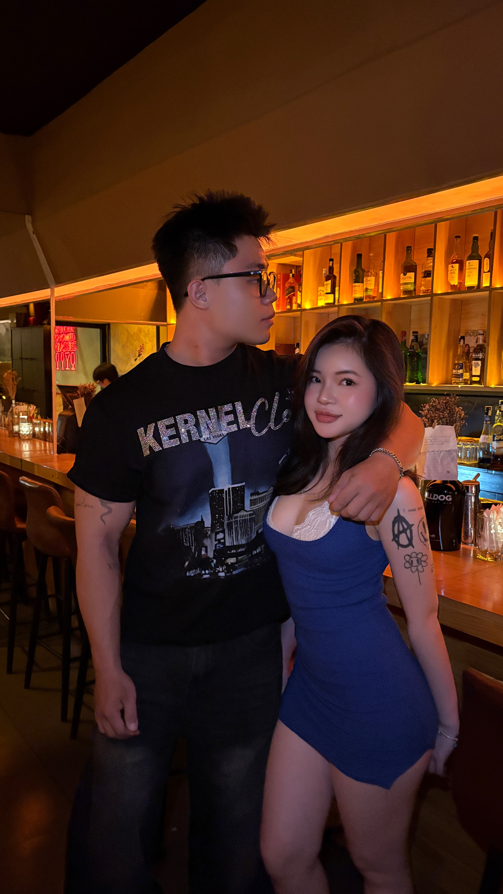

Chào em bé của anh, sáng nay anh lại suy nghĩ vẩn vơ, và như mọi khi, cứ nghĩ nhiều là anh lại muốn viết chút gì đó gửi cho em.
Chuyện là dạo gần đây đôi mình có chút xích mích. Anh biết là do anh ghen, rồi thỉnh thoảng cư xử hơi trẻ con làm cục vàng buồn. Hôm kia anh lỡ nói mấy câu vô tư không để ý khiến em khó chịu, anh thực sự không cố ý, anh xin lỗi em vì những lời nói đó nhé. Có lẽ khi yêu, đôi khi anh lại quên đi sự trưởng thành để được sống với những cảm xúc chân thật nhất. Trẻ con một xíu thôi, nhưng chắc chắn anh không vô tâm đâu.
Anh thương em nhiều lắm. Những lúc nhớ mà không có em bên cạnh, anh hay thấy chạnh lòng. Cứ sáng sớm thức dậy là trong lòng lại thổn thức nhớ em, chắc tại anh thương em quá,
Mỗi lần e gặp chuyện gì về tâm lí là a sót lắm vợ của anh ơi. Anh chỉ mong bên cạnh e để an ủi em thoi, cố gắng qua giai đoạn này là chúng ta lại gặp nhau rồi a sẽ bù đắp khoảng thời gian mà không có a bên cạnh nhé vợ iu.
Việc em dự định gác lại ý định đi Đức khiến anh tự nhủ mình càng phải có trách nhiệm lớn hơn với em và tương lai của đôi mình. Cục vàng luôn là động lực lớn nhất để anh cố gắng mỗi ngày. Anh biết em đang phải chịu rất nhiều áp lực, anh chỉ mong em bớt suy nghĩ lại và đừng ôm mọi thứ một mình. Có chuyện gì hãy cứ chia sẻ với anh, để hai đứa cùng nhau giải quyết nha.
Tuần này trôi qua chậm thật, chắc do anh đếm từng ngày ngóng gặp em quá. Hai đứa mình cùng cố gắng nhé. Tương lai của anh nhất định phải có em, anh sẽ không bao giờ để mất em đâu. Anh yêu em
Ck béo quê miền trung